| 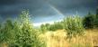 | После дождя. |
| 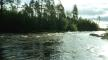 | р. Онда. Какой-то из кривых порогов. |
| 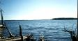 | Ондозеро. По-моему, вид от барака лесосплавщиков рядом с плотиной. |
| 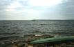 | Ондозеро. Стоянка на острове. Кстати, если где и вставать на Ондозере, так именно на островах; там есть два укромных местечка, где можно очень хорошо провести день-два. |
| 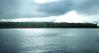 | Ондозеро. Вид уже с другого острова. |
| 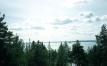 | Ондозеро. Вид с вышки. |
| 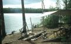 | Ондозеро. |
| 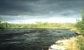 | р. Онда. Чайка... откуда она на реке? |
| 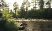 | р. Онда. Выход из порога. |
| 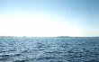 | Волдозеро, что-ли? Вот что значит вовремя не подписать фотографии... |
| 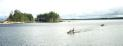 | Ондозеро. |